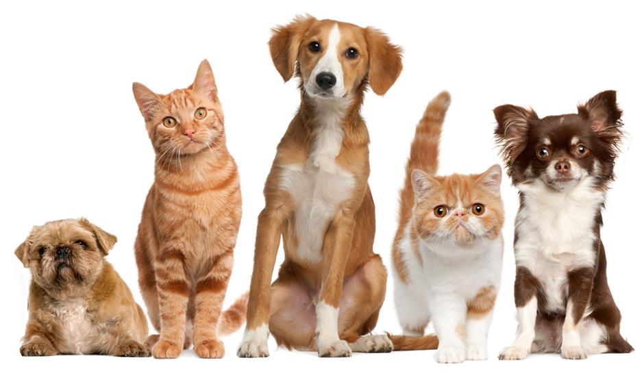
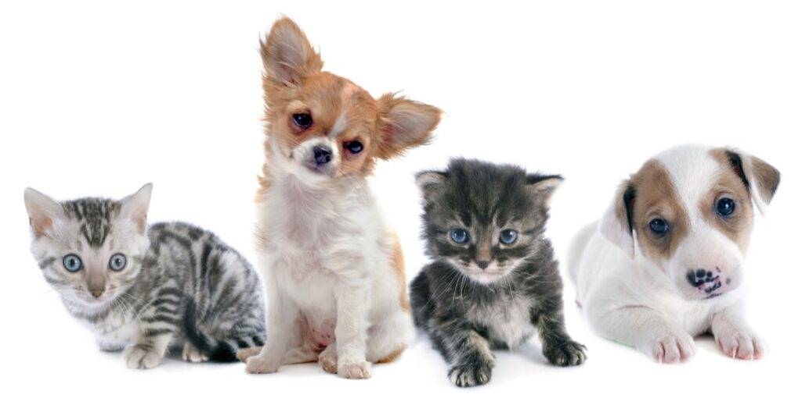
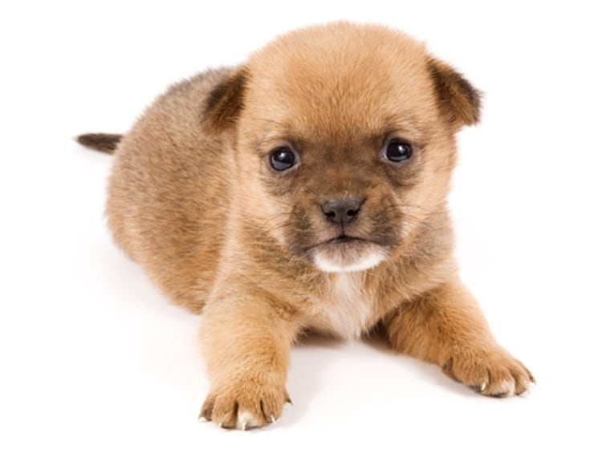
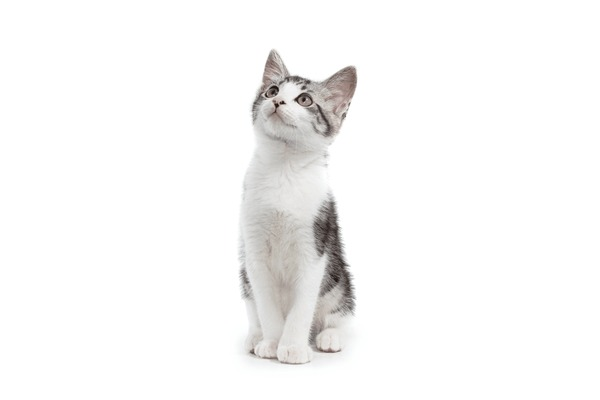

𓄯 Pet Haven 𓃠
A simple webpage that is created for showcasing different breeds of Cats and Dogs
Cats Gallery
Dogs Gallery
Credits
Contact



Fun Facts about Cats and Dogs.
Puppies have 28 teeth and normal adult dogs have 42
Dalmatian puppies are pure white when they are born and develop their spots as they grow older
Most cats give birth to a litter of between one and nine kittens. The largest known litter ever produced was 19 kittens.
A domestic cat can travel at a top speed of approximately 49 km over a short distance.
A group of cats is called a “clowder.”
The Basenji is the world’s only barkless dog
